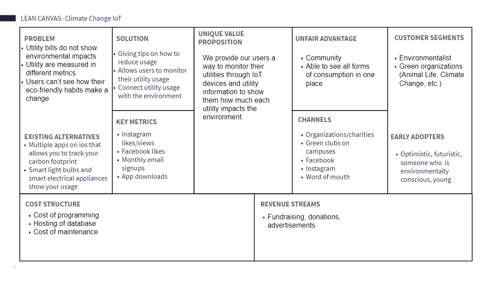
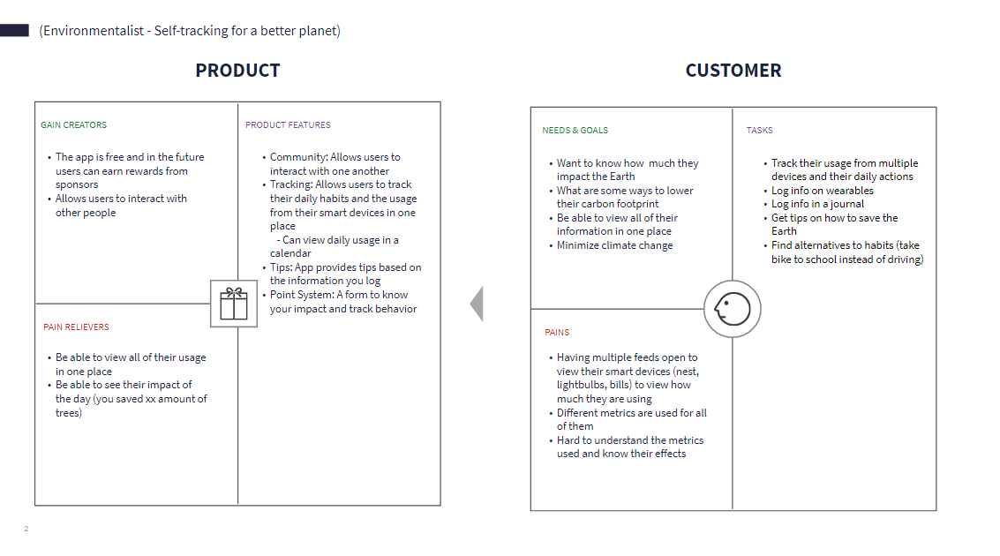
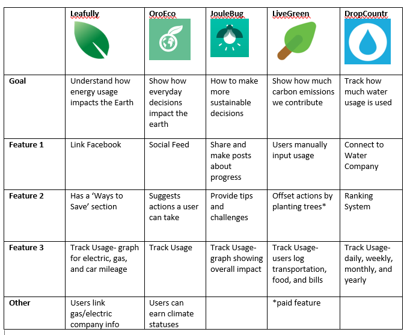
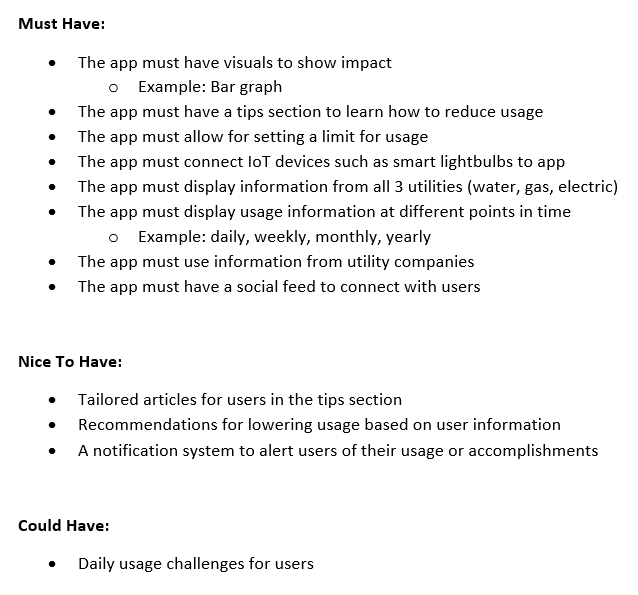
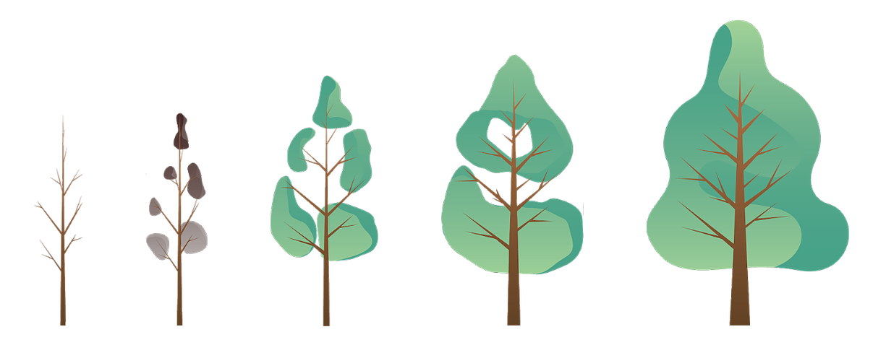

EcoStat: Track your Utility Usage
My team was tasked with tackling an environmental issue with IoT (Internet of Things) devices. We proceeded to create EcoStat, a mobile app, that allows users to understand how their utility usage from smart devices impacts the environment. I was responsible for conducting user and product research and usability testing.
Duration: January 2019 - March 2019
Intro
EcoStat is an MVP (minimum viable product) that aims to help users understand how their utility usage through data visualization. EcoStat uses IoT devices (smart lights, smart thermostat, etc.) and utility company information to determine how the user uses gas, water, and electricity at home. By understanding their use, users can make environmental conscious decisions and stay motivated with our app.
My Role
I was responsible for conducting research and testing of our product. I looked into user behaviors when it comes to the environment, potential competitors, and resources for the development team. I conducted surveys, interviews, cognitive walkthroughs, and usability tests. I worked closely with the UX designer to create the app.
Research and Testing Objectives
Before releasing the MVP, my goal was to find if there was a market for our product, who was our audience, and test the MVP with potential users.
- Find our target audience and understand their needs and pain points.
- Find any usability problems with the prototypes before release.
Research and Testing Process
Insert image here
1. Problem with Utility Bills
Figuring out your environmental impact through utility bills can be confusing. These bills often show an illustration of a monthly breakdown of how much was used and rarely is there information provided on individual days or a recommended usage amount. Water, Gas, and Electric are all measured in different units which makes it difficult for users to know how those levels of usage impact the environment. Many people would like to make changes for the environment but find it hard to stay motivated when their impact is not seen quickly. How can we show environmental impacts through utility use?
2. MVP Goals
Lean Canvas and Value Proposition
Before starting the project, we needed to know if there was a market for our product. We focused on problems, solutions, product advantages, and early adopters in the lean canvas. We then researched our early adopters through the value proposition canvas. The team defined what pain points the customer faced and how our product will provide a solution.
 Figure 1. Lean Canvas(top), Value Proposition (bottom)
3. Understanding our users and competitors
The next step was to understand what pain points and needs our early adopters have when it comes to their utility bills.
Competitive Analysis
Figure 2. Competitive Analysis Diagram
Also, I looked into what features the competitor products had and used their strengths and weaknesses to better design our product.
Target Audience
We targeted people age 18-30 years old because they tend to be tech-savy and more conscious about their decisions affecting the environment.They tend to have smart devices in their homes which is what our app levarages.
Survey and Interview
I wanted to find out what our early adopters were like (eco-friendly habits, utility habits, etc). I created a short survey and conducted 30-minute semi-structured interviews to gather information about pain points in utility usage in connection with the environment.
Results from User and Competitor Research
I analyzed over 23 survey results and 5 interview sessions and found the following information.
- Competitors do not use IoT devices and require users to manually input data.
- Competitors have a gamification aspect to keep users engaged.
- Only 20% of our early adopters (ages 18-30) knew about their impact on the environment based on their household utility usage
- 60% of early adopters find it hard to set personal utility limits
- Early adopters want to be eco-friendly and gather tips online and through social media
4. Design Considerations
After gathering the research data, our team started to brainstorm possible features for tackling user pain points.
Figure 3. A list of features for EcoStat
5. User Testing
Define Testing Protocol
I recruited 5 participants that fit the description of our target audience. I created 5 tasks for our users to test that contains all of the features of the app. The tasks focused on being able to locate feature on the app and understand the data presented to them. Testing lasted 30 minutes for each participant and was followed with additional questioning on their experience.
Usability Test
- 5 Participants, 1 Facilitator, 1 Moderator
- Measurements: Completion Rate, Mistakes Made, User Flow, and Time to complete task
- 5 tasks were given to the user
- Task 1: Imagine you are curious about how much water your househould uses in a week. How would you go about it?
- Task 2: Imagine you are using the app and you notice your electricity is being used a lot. How would you go about finding a tip about reducing electricity?
- Task 3: Where would you go to connect your smart device to the app?
- Task 4: Find "User X" and give them a like for achieving a new accomplishment.
- Task 5: /////
Cognitive Walkthrough
I took the five tasks from the usability test and broke them into smaller subtasks to learn if the participants can recognize their next step in the user flow.
Feedback from Participants
Figure 4. User paths for looking at weekly water usage
- When given the task “Look at Weekly Water Usage”, participants took an alternate path to accomplish the task. They took the red path instead of the green path as shown in figure 4.
- Calendar tab was not being explored. When asked about the tab, the user mentioned that they didn’t notice it.
- Users were confused on what each number on the metric meant.
6. Design Iteration
From the testing, I passed this information to the UX Designer. I suggested that we removed the Calendar tab as it was ignored by our participants. I also recommended adding an information icon that would explain to the user what each metric means.
7. Design Outcome
Figure 5. Home Screen showing EcoScore
Connect Usage And Impact Through EcoScore
In order to show usage effectively to the user, we decided on three methods:
• EcoScore- a numerical representation
• Meter- A circular graph displaying usage
• Tree- a visual representation of a growing tree, as usage increases then the tree starts to deprecate
We decided to convert those metrics into a single number. Each utility starts at a score of 40 totaling up to 120 for all three utilities. The score is compared to their EcoLimit.
As users increase their usage, their score decreases and is reflected through the three methods. EcoScores reset each day at 40 and 120.
Visualization Of Trees
Figure 6. Different trees based on usage
At the start of the day, the tree is filled with leaves and throughout the ay you can see whether the tree withers based on your usage. The tree visual helps users associate that high usage negatively impacts the environment.
Figure 7. EcoLimit Screen
Set Limits To Prevent Overuse With EcoLimit
When the user signs up, the app collects information on household size, location, and time of year to create a recommended usage amount (EcoLimit). The bar graph lets users see hourly usage information for the day, week, month, or year. The horizontal bar graph shows how close users are to their EcoLimit. As usage increases, the bar starts getting closer to the limit and changing to a red color, warning the user.
Stay Motivated With Our Social Feed
In order to keep our users motivated, we found that a community and gamification were the best solution. Users can connect with other users and celebrate their achievements such as earning new EcoTiers and hitting EcoScore streaks. EcoTiers are earned when users consistently get EcoScores of 100 and above.
Having a social feed allows users to keep each other accountable and motivated, building an Eco Friendly mindset.
Figure 8. Social Feed
Figure 9. Tips screen
Learn How To Reduce Usage With Tips
In order to create an eco-friendly mindset, we decided to create a tips section to allow users to discover new ways to be environmentally conscious at home.
What I Learned
- One round of testing isn’t enough. Due to the time constraint, we were only able to fit in one round of testing for the first prototype. It would have been helpful to know if the new design changes improved the user experience. Next time, we should start testing very early in order to fit in another round of testing after design changes were made.
- Create a testing environment. When we conducted our tests, we did it in public but the problem was that there were too many distractions present (loud noise, other people around). This environment distracted some of our participants which skewed some time results. It is better to test in a quiet environment where the participant can focus on the task.